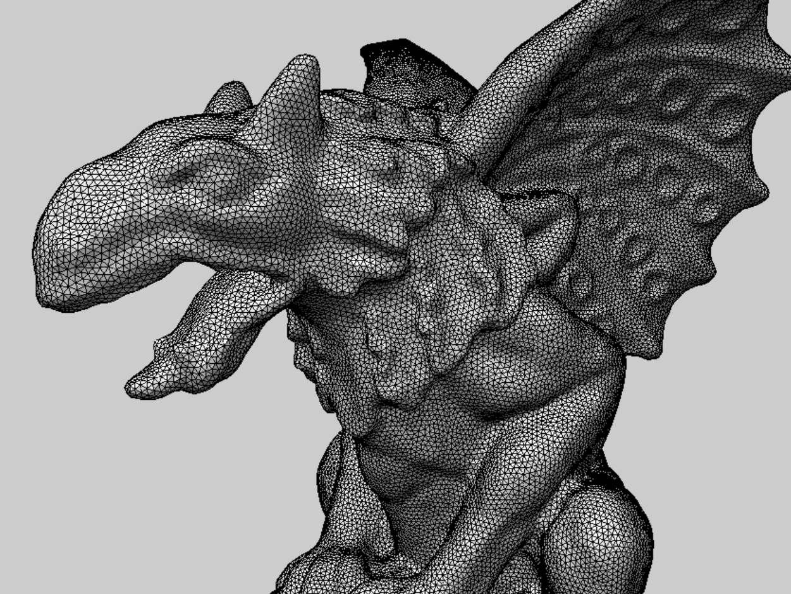

Implement the Remesher and Complete Remesh for 10K-Triangles mesh within Reasonable Time (PDF)
Final project of CPSC 524 Computer Graphics: Modelling
(March 2019 — Apr 2019)
- Iterated through geometry models for mesh refinement, edge collapse, edge flipping
and smoothing to complete the remesh process with a user friendly API in C++.